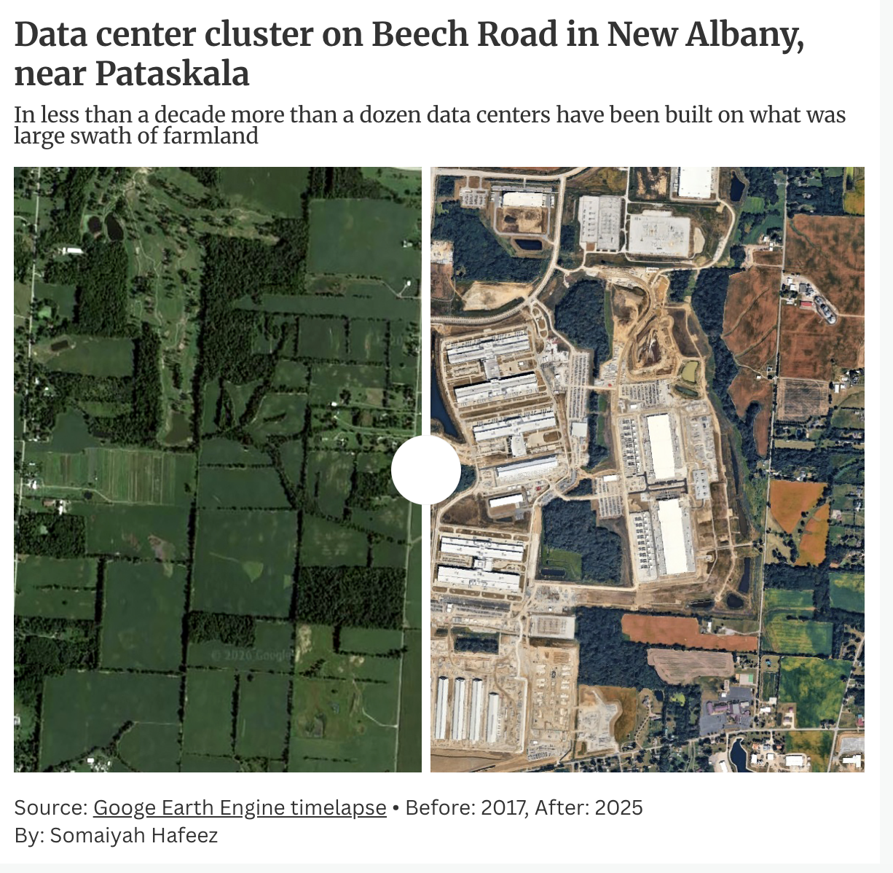
The Data Center Boom in Ohio
Reported from Ohio on how data center development is reshaping communities, from retirees to farmland to the midterm vote.
- 'Nothing but chaos': How the data center boom is ruining the Midwest retirement dream
- Ohio Trump supporters push back on data centers ahead of critical midterm elections
- 'It's been done to us': Ohioans fight data centers, from a former uranium plant to the farm fields
- Watch: Rural Ohio voters fighting back against data center invasion
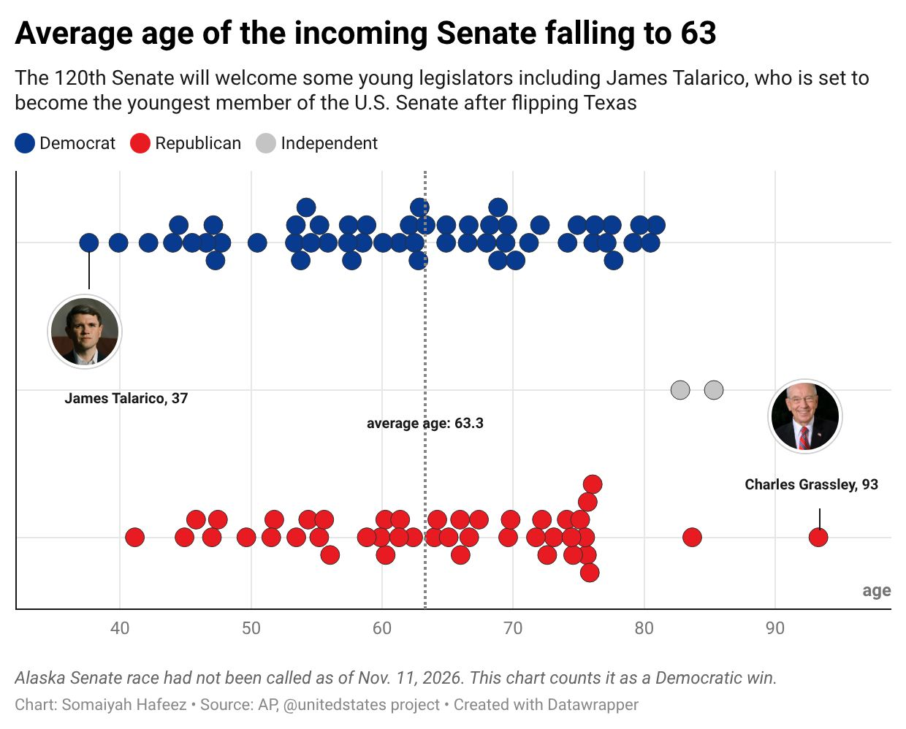
The next Senate is full of historic firsts and is bringing down the average age as young Dems enter
Compared senators' ages on swearing-in day: the 120th Senate has four more members in their 40s and two fewer in their 70s than the 119th.
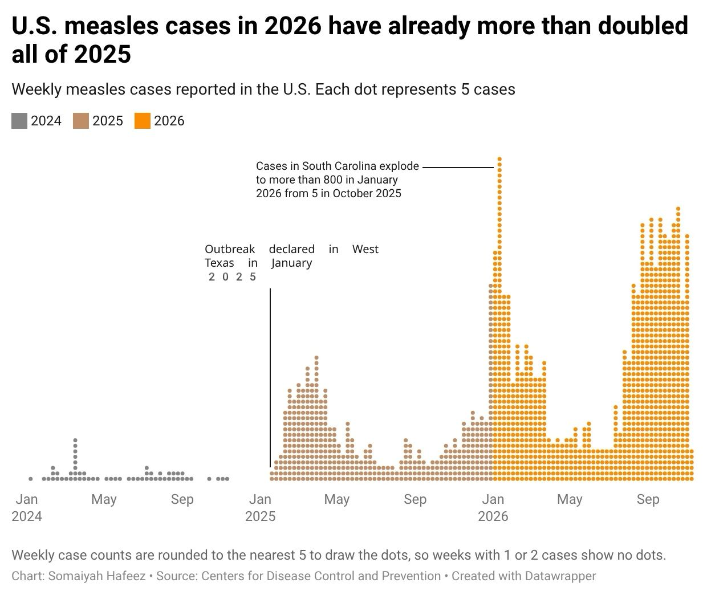
US loses its measles elimination status after 26 years - just 5 states are yet to report outbreak
Used CDC weekly case data to show that 2026 cases have already more than doubled all of 2000-2024.

Protesters at site of Brooklyn building collapse demand ‘build for people, not greed’ after 8 deaths
Demonstrators gathered at the site of the deadly building collapse, which killed 8, mostly immigrants, to demand accountability while firefighters and clergy held a vigil and tenants’ groups handed out food and supplies.
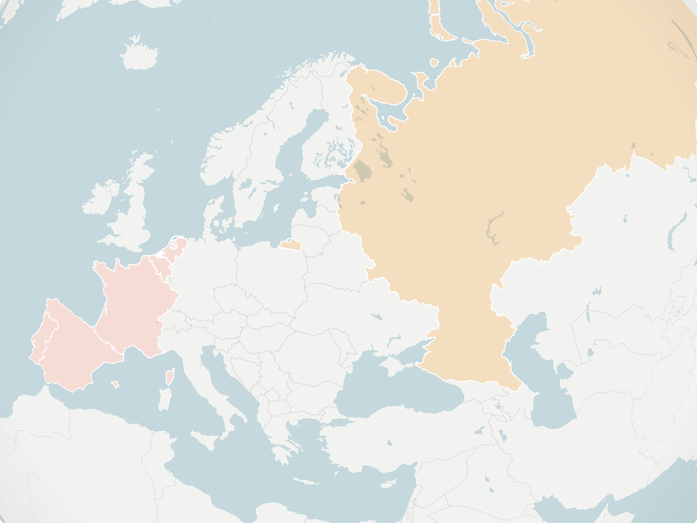
Russia has raked in billions from fuel export to the EU in 6 months, new analysis finds
Data visualization and analysis of Europe's import of Russian LNG.
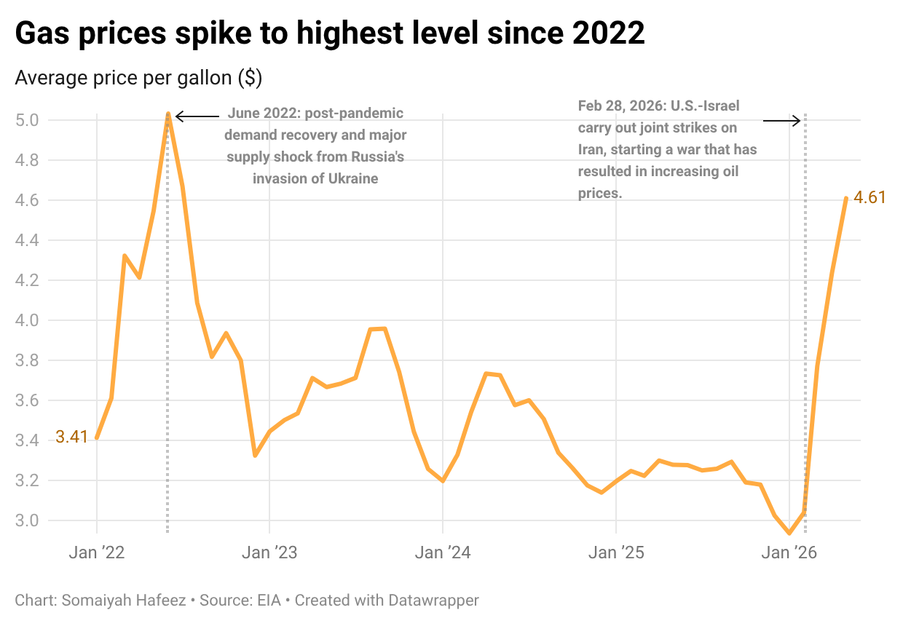
US-Iran war has already cost Americans an extra $447.19 on energy costs
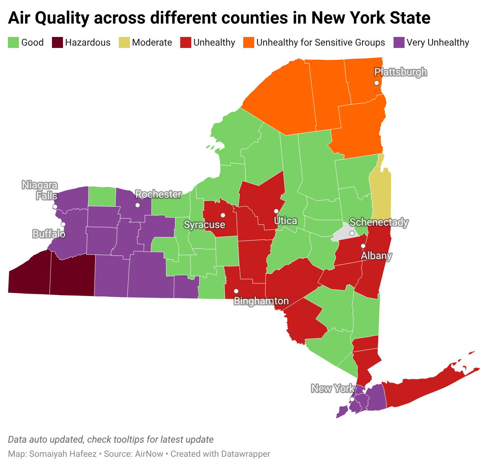
New York air quality mapped after levels spiked to beyond 'unhealthy' from Canadian wildfires
Built an automated data pipeline using GitHub Actions to keep air quality data current in real time.
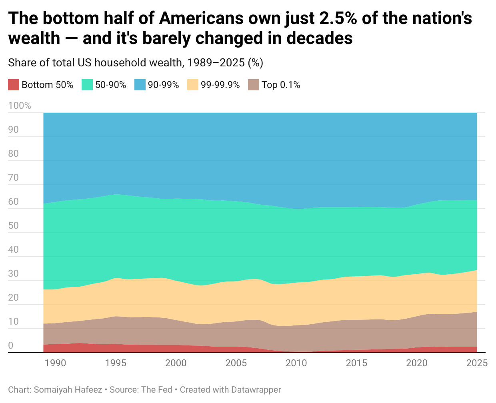
As Elon Musk turns 55, his fortune underscores the stark wealth inequality in the U.S.
Analyzed Musk's unprecedented wealth accumulation against U.S. income inequality data.
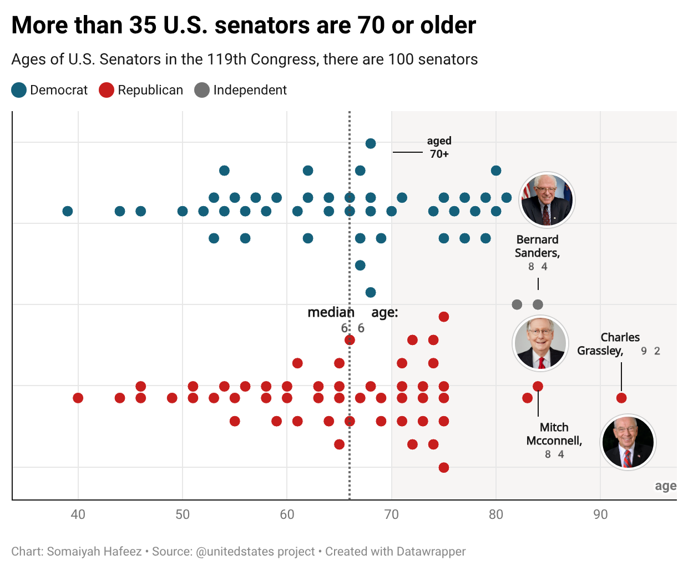
Is this the oldest Senate ever? How half of the chamber has passed the retirement age
Analyzed Congressional age data to show a historic demographic shift in the U.S. Senate.
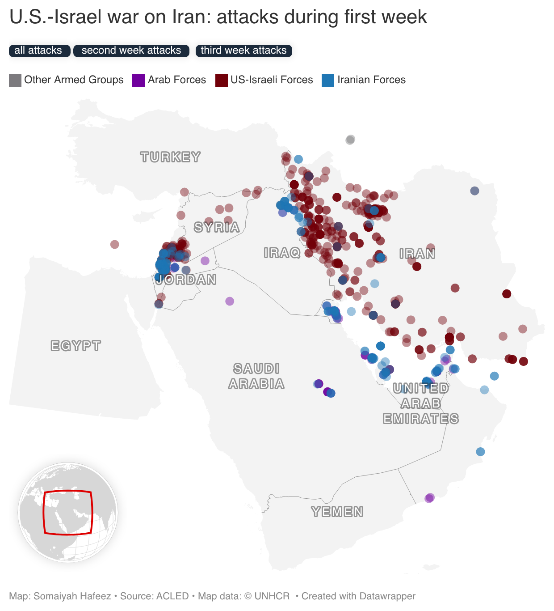
Map: 2,297 US-Israeli strike events on Iran across 29 provinces
Mapped U.S.-Israeli strikes using ACLED conflict monitoring data as war passed one month.
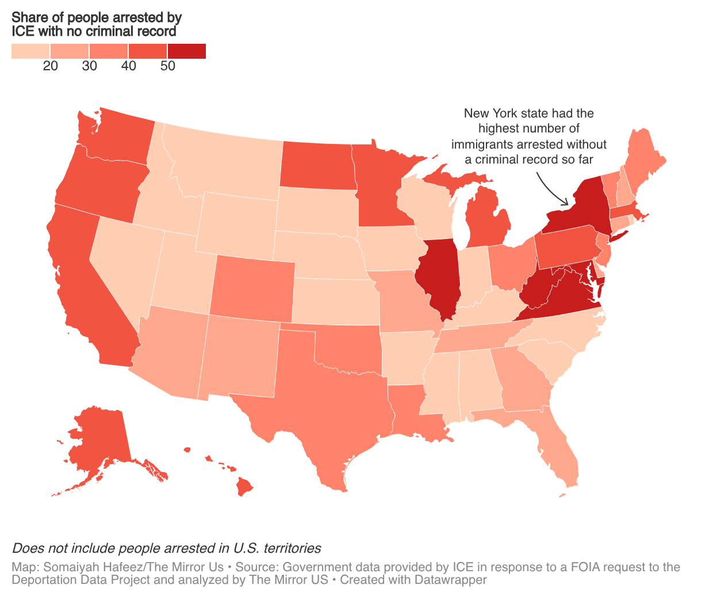
60% of ICE arrests in New York had no criminal charges
Analyzed the federal ICE arrest dataset across New York State.
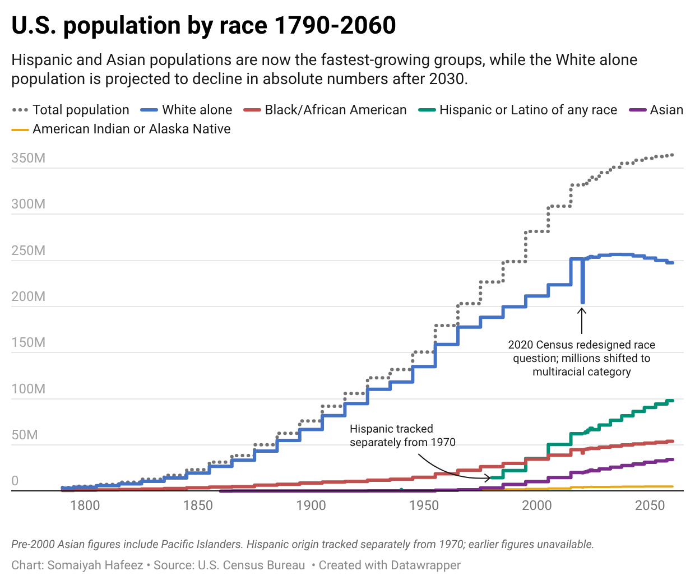
U.S. population hits 340 million ahead of America's 250th birthday
Analyzed Census population growth trends timed to the nation's semiquincentennial.
Interactive map shows impact of SNAP benefits freeze
Visualizing which states and counties are most affected by benefit freezes.
Inside the New York borough that flipped in elections
Voting and demographic data combined to analyze political shifts at borough level.
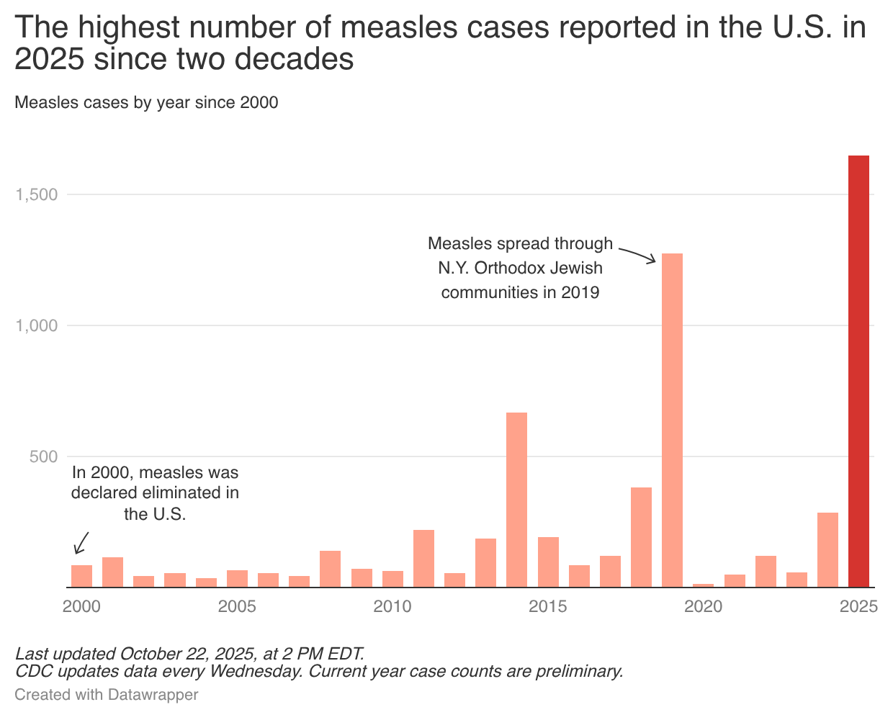
State reports highest number of measles cases
Analyzed CDC data to track outbreak trends and state-level incidence.